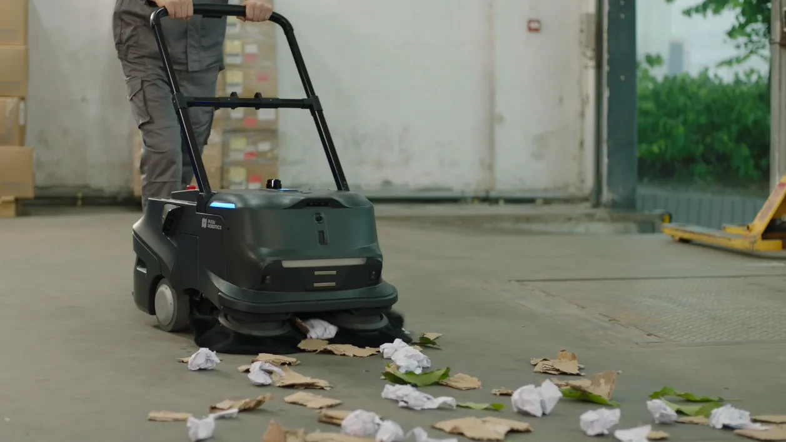
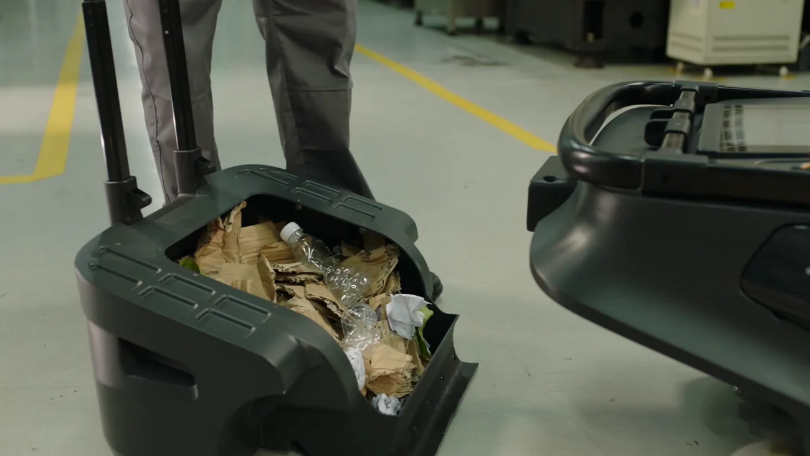
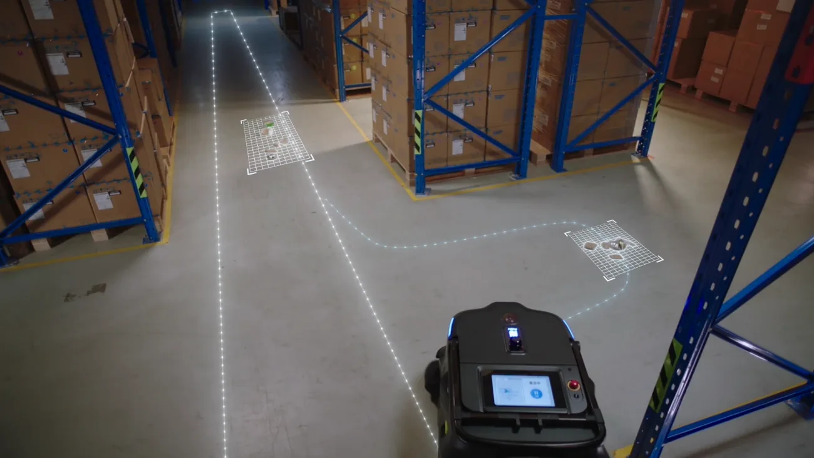
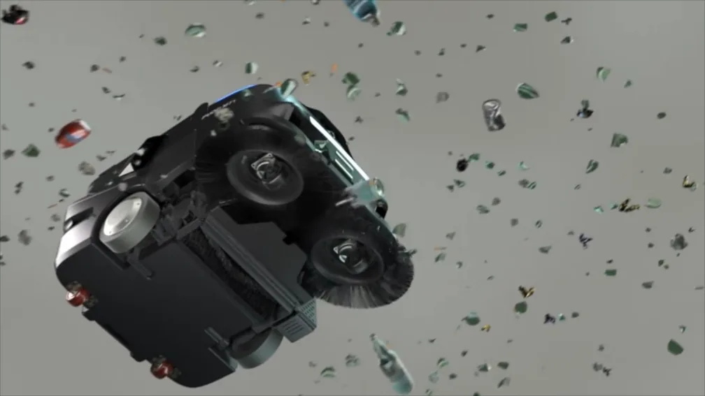

MT1 Varredora autónoma com IA para grandes superfícies
Varre pó fino e resíduos volumosos numa só passagem e trabalha por turnos sem supervisão, com carregamento automático na sua estação.
- Rendimentoaté 1.800 m²/h
- Largura de limpeza70 cm
- Balde de resíduos35 L
- Autonomia4-8 h

PVP 14.900 €
O que é o MT1?
O MT1 é uma varredora robótica para limpeza a seco de interiores amplos: armazéns, fábricas, centros comerciais ou estações. As suas escovas de duplo disco recolhem desde pó fino até folhas e garrafas, e as suas câmaras com IA localizam o lixo para o limpar de forma pontual. Navega de forma autónoma com SLAM lidar e VSLAM, e regressa sozinha para carregar.
Resíduos grandes e pequenos
As escovas de duplo disco recolhem folhas e garrafas e varrem simultaneamente o pó e a sujidade fina.
Reconhecimento de lixo com IA
As câmaras identificam diferentes tipos de resíduos em tempo real; em modo de limpeza pontual cobre até 6.000 m²/h.
Controlo ativo do pó
Ventilação de pressão negativa de alto caudal e filtro que retêm as partículas no balde e evitam que regressem ao ambiente.
Funcionamento contínuo
Até 8 h de autonomia, carregamento em cerca de 3 h e acoplamento automático à estação para trabalhar por turnos.
Aplicações do MT1
Cenários em que o MT1 se enquadra.
- Armazéns e logística
- Unidades de fabrico
- Grandes superfícies de bricolage
- Centros comerciais
- Transportes públicos e aeroportos
Especificações técnicas do MT1
Altura máxima de obstáculo
20 mm
Peso
65 kg (apresentação) / 74 kg (catálogo)
Velocidade de cruzeiro
0,2 a 1,2 m/s (ajustável)
Dimensões (C × L × A)
840 × 600 × 490 mm
Método
varrimento a seco
Rendimento em limpeza completa
até 1.800 m²/h
Rendimento em limpeza pontual
até 6.000 m²/h
Largura de limpeza
70 cm
Escovas
2 escovas laterais de disco e escova de rolo
Capacidade do balde de resíduos
35 L
Saco de pó
35 L, partilhado com o balde de resíduos
Controlo do pó
ventilação de pressão negativa e filtro
Limpeza de arestas
segue paredes e cantos
Superfície de utilização recomendada (catálogo)
interiores de 500 a 25.000 m²
Superfície máxima de projeto
mais de 100.000 m²
Ver a ficha técnica completa
Dimensões e peso
| Dimensões (C × L × A) | 840 × 600 × 490 mm |
|---|---|
| Peso | 65 kg (apresentação) / 74 kg (catálogo) |
Limpeza
| Método | varrimento a seco |
|---|---|
| Rendimento em limpeza completa | até 1.800 m²/h |
| Rendimento em limpeza pontual | até 6.000 m²/h |
| Largura de limpeza | 70 cm |
| Escovas | 2 escovas laterais de disco e escova de rolo |
| Capacidade do balde de resíduos | 35 L |
| Saco de pó | 35 L, partilhado com o balde de resíduos |
| Controlo do pó | ventilação de pressão negativa e filtro |
| Limpeza de arestas | segue paredes e cantos |
| Superfície de utilização recomendada (catálogo) | interiores de 500 a 25.000 m² |
| Superfície máxima de projeto | mais de 100.000 m² |
Funções de IA
| Reconhecimento de lixo | câmaras com IA e aprendizagem profunda |
|---|---|
| Modos de IA (catálogo) | limpeza mágica, limpeza pontual, limpeza adaptativa, recarga inteligente, mapa de calor e limpeza guiada |
Mobilidade e navegação
| Navegação | VSLAM + marcadores + SLAM lidar |
|---|---|
| Velocidade de cruzeiro | 0,2 a 1,2 m/s (ajustável) |
| Passagem mínima | 75 cm |
| Altura máxima de obstáculo | 20 mm |
| Ranhuras transponíveis | 35 mm |
Sensores
| Lidar | 1 |
|---|---|
| Câmara VSLAM | 1 |
| Câmaras RGBD | 3 |
| Câmaras RGB | 2 |
| Laser de linha | 2 |
| Outros | luz de preenchimento e sensor de para-choques |
Bateria e carregamento
| Capacidade da bateria | 45 Ah |
|---|---|
| Autonomia | 4-8 h consoante o nível de limpeza |
| Tempo de carga | < 3 h (catálogo: aprox. 3 h) |
| Carregamento | acoplamento automático à estação de carga |
Interface e utilização
| Ecrã | 10 polegadas |
|---|---|
| Controlos | botão de ligar e botão de paragem de emergência |
| Utilização manual | guiador extensível |
| Manutenção | balde e consumíveis modulares de libertação rápida |
Conectividade
| IoT | módulos de controlo de elevador e de portas eletrónicas para trabalhar em vários pisos |
|---|---|
| Supervisão | app PUDU Link e interface de PC com relatórios de limpeza e aviso de balde cheio |
Acessórios e consumíveis
| Estação de carga | sim |
|---|---|
| Consumíveis | escova lateral, escova de rolo de varrimento, escova de rolo de borracha e escova de rolo amovível |
| Filtro | alta eficiência H11/H13 |
Galeria do MT1




